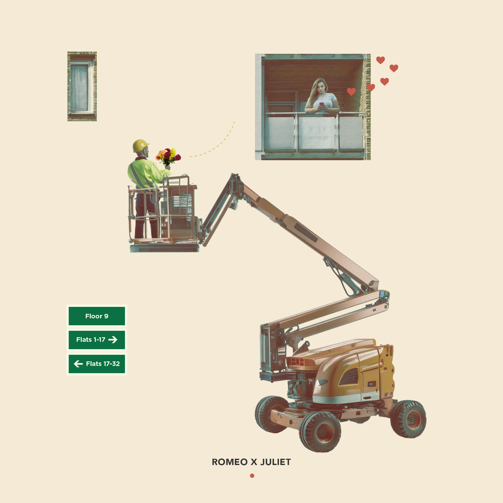
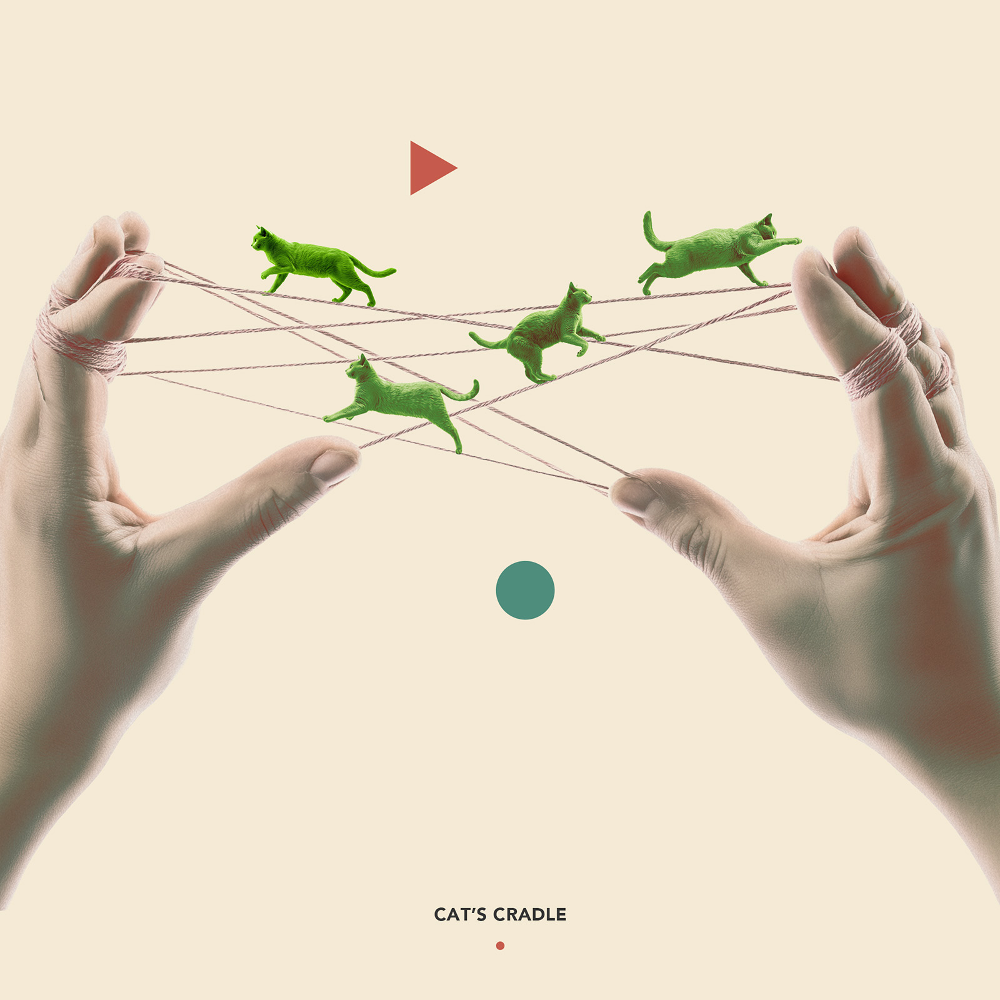
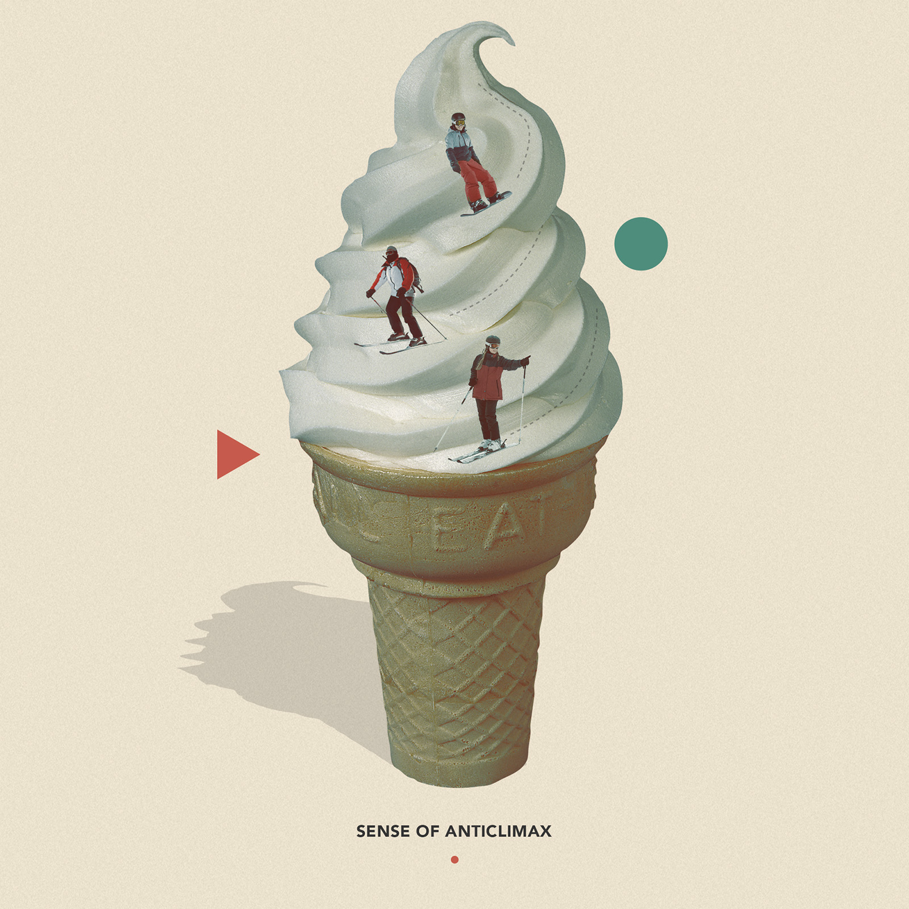
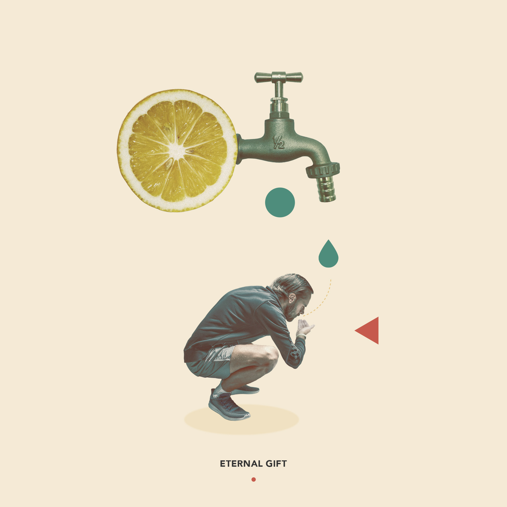
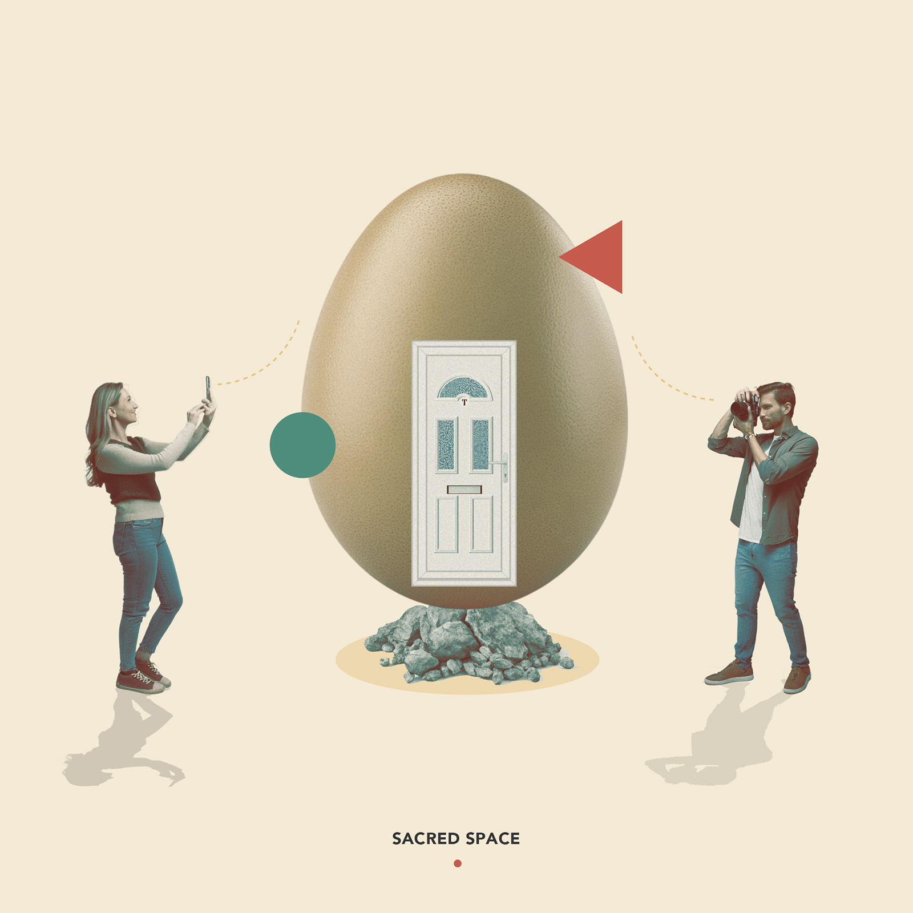

Soft absurdities
Collage work exploring systems, interfaces, and the quiet mechanisms that shape behaviour.





Collage work exploring systems, interfaces, and the quiet mechanisms that shape behaviour.




